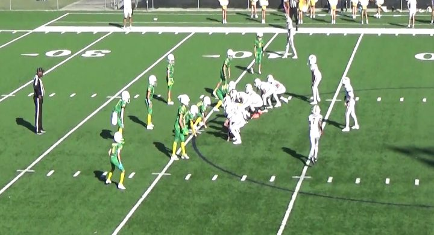
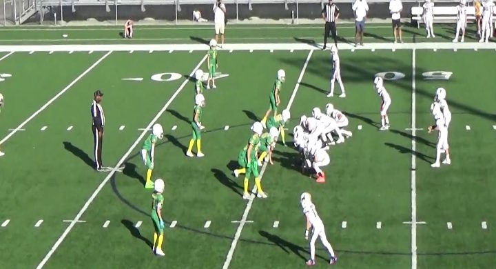

He is the run game.
The quarterback ran it 22 times: the dive after the jet fake 10, the blast 7, off tackle 5. Blast and off tackle went to the strong side every time a side was charted. Inside linebackers key the quarterback and fill fast.
prepared by Mr. Wang from Ducks vs Wyoming Cowboys, October 17, 2026
The Cowboys run the ball, and the quarterback carries it most. 30 of their 37 plays were runs, and the quarterback kept it on 22. Their main set is two tight ends and a wingback, and they ran from it 26 of 27 times. The weak-side WR's jet motion is mostly a fake: 10 of 16 jet plays, the quarterback kept it and dove inside.
The quarterback ran it 22 times: the dive after the jet fake 10, the blast 7, off tackle 5. Blast and off tackle went to the strong side every time a side was charted. Inside linebackers key the quarterback and fill fast.
When the weak-side WR runs across, most of the time it is a fake. When he does take it, the jet sweep went strong 5 of 5. On the reverse the quarterback runs strong and the wingback takes it back weak, 3 of 3. The strong-side end sets the edge. The backside end stays home for the reverse.
When they stacked the tight end, wingback and halfback to one side, the quarterback ran off tackle 4 of 5 times, strong every time a side was charted. The strong-side end and linebacker shift to the overload before the snap.
Their two main looks, 32 of their 37 plays. The boards are drawn from the personnel; the film frame beside each one shows how they really lined up. The other 5 snaps came from three sets they barely used, all passes, and are listed in the coach reference at the bottom.
27 of their 37 plays: 26 runs, 1 pass.

| Call | Times | Which way |
|---|---|---|
| Fake Jet Sweep, QB Dive | 10 | 5 strong · 5 weak |
| QB Blast | 6 | 6 strong · 0 weak |
| Jet Sweep | 5 | 5 strong · 0 weak |
| WB Reverse | 3 | 0 strong · 3 weak |
| QB Off Tackle | 1 | 1 strong · 0 weak |
| QB Off Blast | 1 | 1 strong · 0 weak |
| Jet Sweep Pass | 1 | – |
Each call name opens a clip of it.
5 of their 37 plays: 4 runs, 1 pass.

| Call | Times | Which way |
|---|---|---|
| QB Off Tackle | 4 | 3 strong · 0 weak |
| Deep Pass | 1 | – |
Each call name opens a clip of it.
Ball carriers were not charted by jersey, so this is by position, read from the play call.
| Who | Plays | Calls |
|---|---|---|
| QB keeps and runs | 22 | Fake Jet Sweep, QB Dive 10, QB Blast 6, QB Off Tackle 5, QB Off Blast 1 |
| Weak-side WR, jet | 5 | Jet Sweep 5 |
| WB, reverse | 3 | WB Reverse 3 |
| Pass | 7 | Short Pass to WB, Middle 1, WR Screen 1, Weak-Side Slant 1, Deep Pass, Strong-Side WR 1, Deep Pass 1, Pass Attempt 1, Jet Sweep Pass 1 |
Practice the calls: “Jet, watch the QB!” “Reverse!” “Overload, strong!”
The Cowboys wear white. The Ducks wear green with yellow.
The weak-side WR runs across in motion. The quarterback fakes it to him and keeps it up the middle. Watch the quarterback, not the jet.
Same look, but this time the WR takes it and keeps going to the strong side.
The quarterback runs to the strong side and the wingback takes it back to the weak side. The backside end has to stay home.
No fake. The quarterback takes the snap and runs inside to the strong side.
37 Cowboys offensive snaps from the chart. Yards and results were not charted.
| Play | Formation | Play | Side |
|---|---|---|---|
| 10 | Shotgun 2TE, WB | QB Blast | Strong |
| 13 | Shotgun 2TE, WB | QB Blast | Strong |
| 15 | Shotgun 2TE, WB | QB Off Tackle | Strong |
| 16 | Shotgun 2TE, WB | WB Reverse | Weak |
| 17 | Shotgun 2TE, WB | Fake jet sweep, QB dive | Weak |
| 18 | Shotgun 2TE, WB | Fake jet sweep, QB dive | Strong |
| 19 | Shotgun 2TE, WB | Fake jet sweep, QB dive | Weak |
| 21 | Shotgun 2TE, WB | jet sweep | Strong |
| 22 | Shotgun 2TE, WB | Fake jet sweep, QB dive | Weak |
| 23 | Shotgun 2TE, WB | Fake jet sweep, QB dive | Strong |
| 24 | Shotgun 2TE, WB | QB Blast | Strong |
| 25 | Shotgun 2TE, WB | QB Off Blast | Strong |
| 26 | Shotgun 3TE overload, WB | Throw to WB short middle | |
| 38 | Shotgun 5WR quads | WR screen | |
| 39 | Shotgun 2TE, WB | WB Reverse | Weak |
| 40 | Shotgun 2TE, WB | QB Blast | Strong |
| 41 | Shotgun 5WR quads | Throw to weak side slant | |
| 43 | Shotgun 2TE, WB | QB Blast | Strong |
| 44 | Shotgun 2TE, WB | WB Reverse | Weak |
| 45 | Shotgun 2TE, WB | QB Blast | Strong |
| 46 | Shotgun 2TE, WB | Fake jet sweep, QB dive | Weak |
| 54 | Shotgun 2TE, WB | jet sweep | Strong |
| 55 | Shotgun 2TE, WB | Fake jet sweep, QB dive | Strong |
| 60 | Shotgun 2TE, WB | jet sweep | Strong |
| 62 | Shotgun 2TE, WB | Fake jet sweep, QB dive | Weak |
| 63 | Shotgun 2TE, WB | jet sweep | Strong |
| 69 | Shotgun 2TE, WB | jet sweep | Strong |
| 70 | Shotgun TE, WB, HB overload | QB off tackle | Strong |
| 78 | Shotgun TE, WB, HB overload | QB Off Tackle | Strong |
| 79 | Shotgun overload TE, WB, HB, Twin WRs | Pass deep to WR on strong side | |
| 80 | Shotgun TE, WB, HB overload | QB off tackle | |
| 81 | Shotgun TE, WB, HB overload | Pass deep | |
| 82 | Shotgun 2TE, WB | Fake jet sweep, QB dive | Strong |
| 87 | Shotgun TE, WB, HB overload | QB off tackle | Strong |
| 88 | Shotgun overload TE, WB, HB, Twin WRs | pass attempt | |
| 89 | Shotgun 2TE, WB | jet sweep pass | |
| 90 | Shotgun 2TE, WB | Fake jet sweep, QB dive | Strong |